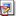

You can add annotations to a selected dataset or image. This will provide a user-specific text comment, which may be particularly useful when sharing datasets and images with other OMERO users.
- Select the dataset to be annotated.
- Make sure the Properties tab is selected in the right-hand pane. Or, select the toolbar icon
 .
.
- Below the Description field is the Annotation field.
- Type in your annotation in the left-hand area of the Annotation field (see Figure 10). You will automatically overtype any existing text. If necessary, the Data Manager window can be scrolled or resized to allow enough space to type the annotation.
- On completing the annotation, select Save to confirm.
On saving, the annotation will be 'stamped' with the user who created the annotation.
The  icon shows that a dataset has one or more annotation (see TestDataset1 in Figure 12 for an example).
icon shows that a dataset has one or more annotation (see TestDataset1 in Figure 12 for an example).
The  icon shows that an image has one or more annotations.
However you can also view Permissions information for the selected project or dataset, by selecting the Permissions tab (see
Figure 9).
If the right-hand pane appears blank when a project or dataset is selected, select the toolbar icon  to view properties and permissions information in the right-hand pane.
to view properties and permissions information in the right-hand pane.